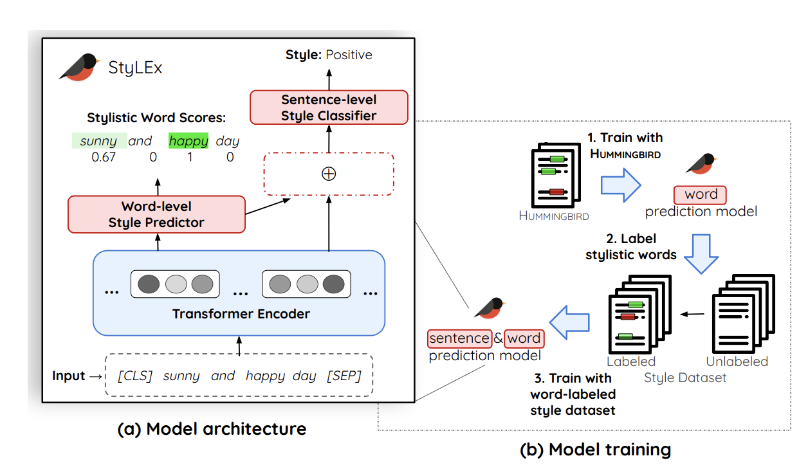

Robustness of NLP Models Against Adversarial Attacks
Fall 2024 CSCI 5541 NLP: Class Project - University of Minnesota
Team AdversAI
Mobina
Member 2
Member 3
Member 4
Mobina
Member 2
Member 3
Member 4
Our project investigates the robustness of NLP models against adversarial attacks. We fine-tune the BERT model on both clean and adversarial data (generated via synonym-based perturbations) to understand its resilience. Despite adversarial training, accuracy improvements were modest, highlighting the challenges of making models robust to diverse adversarial inputs.
A figure that conveys the main idea behind the project or the main application being addressed. This figure is from StyLEx.

Explanation about the figure goes here.
What did you try to do? What problem did you try to solve? Articulate your objectives using absolutely no jargon.
We aimed to enhance the robustness of NLP models by making them more resistant to adversarial attacks that change the input text while preserving its meaning.
How is it done today, and what are the limits of current practice?
Current models are trained on clean data, which leaves them vulnerable to adversarial perturbations. Adversarial training can help, but it is limited by the diversity and unpredictability of attacks.
Who cares? If you are successful, what difference will it make?
Improving robustness makes NLP models more reliable in real-world applications, enhancing security and reducing susceptibility to adversarial manipulations.
What did you do exactly? How did you solve the problem? Why did you think it would be successful? Is anything new in your approach?
We fine-tuned BERT on adversarial examples generated by changing words to their synonyms. This aimed to expose the model to variations in inputs and improve its resilience. We believed that by expanding the training data with adversarial examples, the model would learn to generalize better under attacks.
What problems did you anticipate? What problems did you encounter? Did the very first thing you tried work?
We anticipated that replacing too many words could compromise the integrity of the input sentence. Indeed, the model showed limited improvement, likely due to the variability of possible adversaries and the challenge in effectively generalizing from such attacks.
How did you measure success? What experiments were used? What were the results, both quantitative and qualitative? Did you succeed? Did you fail? Why?
We measured success by evaluating the model's accuracy on both clean and adversarial datasets. Before adversarial training, BERT achieved 88.09% accuracy on adversarial examples. After adversarial training, the accuracy improved by 1.05%. On the clean dataset, the model performed at 92.83% accuracy. This limited improvement suggests that the model struggles to generalize effectively to diverse adversarial inputs.
| Experiment | 1 | 2 | 3 |
|---|---|---|---|
| Sentence | Example 1 | Example 2 | Example 3 |
| Errors | error A, error B, error C | error C | error B |

Our work has demonstrated the challenges of adversarial training in NLP, particularly when faced with diverse synonym-based attacks. In future work, we plan to evaluate the robustness of Meta's newly introduced quantized Llama models against adversarial inputs, considering the trade-offs between efficiency gains and robustness. These quantized models, while offering significant speedup and size reduction, may present new vulnerabilities that we aim to investigate thoroughly.